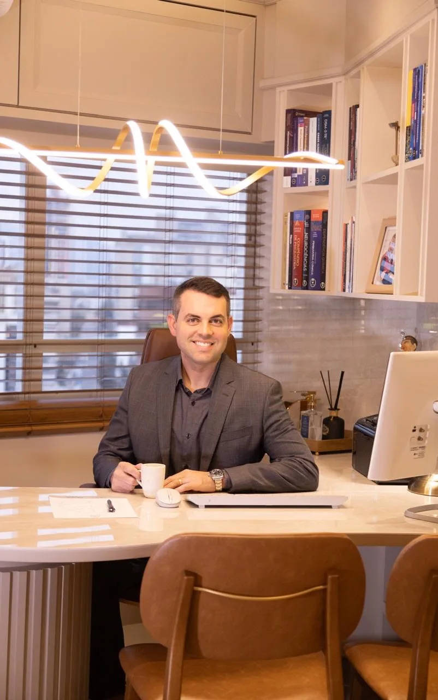
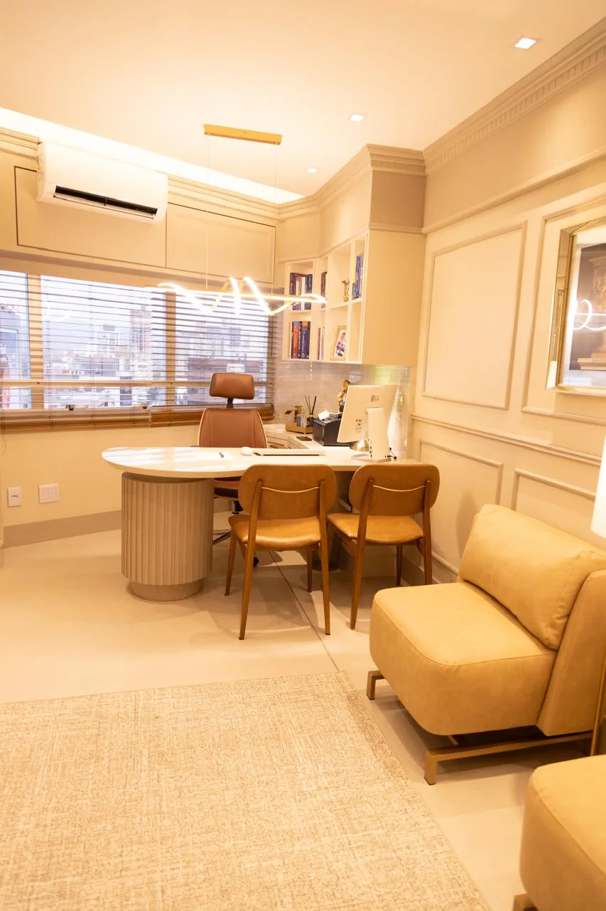

O que você sente importa.
Aqui, sua história encontra espaço, respeito e uma escuta atenta.
PSIQUIATRIA EM TUBARÃO, SC
Um espaço seguro para ser você, compreender o que sente e encontrar novos caminhos para viver melhor.
Agendar minha consultaCUIDAR COMEÇA POR ACOLHER
Cuidar da mente é abrir espaço para uma vida com mais bem-estar. O primeiro passo pode ser uma conversa.
Aqui, sua história encontra espaço, respeito e uma escuta atenta.

O cuidado considera suas necessidades, sua rotina e suas relações.
Compreender o que acontece é parte da construção do seu cuidado.
Conheça o atendimentoMUITO PRAZER, RAFAEL OLIVEIRA
Acredito em uma medicina empática, que olha para o indivíduo além dos sintomas.
Sou Rafael Vieira de Oliveira, médico psiquiatra. Meu trabalho considera a saúde física, o estilo de vida e as relações de cada pessoa, para construir um cuidado que faça sentido em sua vida.
O interesse pela medicina começou cedo. Durante a graduação, encontrei no estudo do comportamento humano e das emoções o caminho para a psiquiatria.
Após a residência no Hospital Psiquiátrico São Pedro, em Porto Alegre, trabalhei no Hospital São Lucas da PUC-RS. De volta a Santa Catarina, minha trajetória passou por CAPS, APAEs, ambulatórios especializados e perícias na Justiça Federal.
Hoje, concentro meu atendimento na clínica em Tubarão, com tempo para ouvir e conversar. Busco oferecer um espaço seguro, sem julgamentos, para que possamos compreender o sofrimento e cuidar da sua qualidade de vida.
Vamos conversar?FORMAÇÃO
COMO POSSO AJUDAR
A avaliação psiquiátrica ajuda a compreender cada história e orientar um cuidado individualizado. Conheça as principais áreas de atuação.
Quero buscar ajudaO acompanhamento dos transtornos de humor faz parte da atuação do Dr. Rafael. A avaliação considera a história de cada pessoa para orientar os próximos passos do cuidado.
Atendimento voltado ao transtorno de ansiedade generalizada, fobia social, fobias específicas e síndrome do pânico, com escuta e avaliação individual.
O Transtorno de Déficit de Atenção/Hiperatividade está entre as condições atendidas. A consulta é o momento de compreender as dificuldades e sua relação com a vida cotidiana.
Avaliação e acompanhamento do transtorno obsessivo-compulsivo e do transtorno de estresse pós-traumático, respeitando a singularidade e o tempo de cada pessoa.
Um espaço de acolhimento, sem julgamentos, para conversar sobre o uso de substâncias e construir um plano de cuidado a partir da avaliação psiquiátrica.
A atuação também inclui transtornos de personalidade e síndromes psicóticas, como a esquizofrenia. Entre em contato para obter informações sobre o atendimento.
SUA EXPERIÊNCIA DE ATENDIMENTO
Da primeira escuta ao acompanhamento, você participa das decisões sobre a sua saúde.
Falar sobre sentimentos e pensamentos em um ambiente de respeito e acolhimento.
Entender a avaliação e cada passo do diagnóstico, com espaço para suas dúvidas.
Conversar sobre as possibilidades de tratamento, considerando o seu perfil.
Cultivar o vínculo e conversar sobre os caminhos para cuidar da qualidade de vida.
POSSIBILIDADES DE CUIDADO
O plano de cuidado é conversado com você. Ele pode envolver diferentes recursos, conforme a avaliação e as suas necessidades.
O vínculo entre médico e paciente permite conversar sobre o tratamento e a qualidade de vida ao longo do cuidado, com orientações explicadas em consulta.
Quando há indicação, a escolha da medicação é discutida com o paciente, considerando seu perfil e os possíveis efeitos colaterais.
A interação entre psiquiatra e psicólogo contribui para um olhar amplo sobre o paciente. O tratamento multidisciplinar é valorizado na construção do cuidado.
A psicoeducação ajuda os familiares a compreenderem o processo de adoecimento e a participarem da rede de cuidado.
UM ESPAÇO PARA ACOLHER VOCÊ
Conheça o consultório em Tubarão.
Um ambiente para conversar com tranquilidade.

Av. Marcolino Martins Cabral, 2099
10º andar, sala 1003 · Vila Moema
Tubarão, SC · CEP 88705-001
PERGUNTAS FREQUENTES
Encontre algumas respostas sobre o atendimento. Para outras informações, fale diretamente pelo WhatsApp.
Tirar uma dúvidaEntre em contato pelo WhatsApp (48) 99686-6456 ou pelo telefone (48) 3660-0249 para consultar a disponibilidade e receber orientações de agendamento.
No Medical Center, Bloco C, na Av. Marcolino Martins Cabral, 2099, 10º andar, sala 1003, Vila Moema, em Tubarão, SC. Veja a localização e as fotos do consultório.
O atendimento valoriza a escuta sem julgamentos e considera a pessoa como um todo. O diagnóstico e as possibilidades de tratamento são explicados para que o paciente participe das decisões.
A indicação é individual, a partir da avaliação. Quando o tratamento requer medicação, a escolha é discutida com o paciente, considerando seu perfil e os possíveis efeitos colaterais.
O Dr. Rafael valoriza a interação entre psiquiatra e psicólogo. Conte na consulta sobre os acompanhamentos que já realiza para conversar sobre a integração do seu cuidado.
Fale pelo WhatsApp ou telefone do consultório para obter informações atualizadas sobre valores, formas de pagamento e disponibilidade de horários.
VAMOS CONVERSAR?
Reserve um espaço na sua vida para a sua saúde mental. Entre em contato e agende sua consulta.
Agendar pelo WhatsAppEscuta.
Acolhimento.
Cuidado.